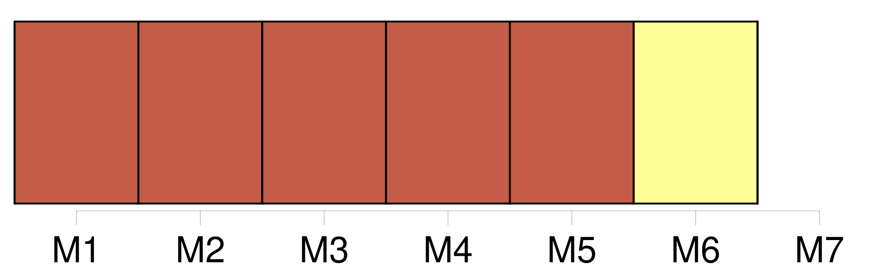

Longueur nb maillons : 6 mentions |
  |
Des dents du plus bel orient scintillaient dans son rouge sourire, et de petites fossettes se creusaient à chaque inflexion de sa bouche dans le satin rose de [ses adorables joues] [158 phrases] De grosses larmes débordaient de ses yeux et coulaient le long de [ses joues] sur sa barbe blanche. [33 phrases] La pâleur de [ses joues] , le rose moins vif de ses lèvres, ses longs cils baissés et découpant leur frange brune sur cette blancheur lui donnaient une expression de chasteté mélancolique et de souffrance pensive d’ une puissance de séduction inexprimable ; ses longs cheveux dénoués, où se trouvaient encore mêlées quelques petites fleurs bleues, faisaient un oreiller à sa tête et protégeaient de leurs boucles la nudité de ses épaules ; ses belles mains, plus pures, plus diaphanes que des hosties, étaient croisées dans une attitude de pieux repos et de tacite prière, qui corrigeait ce qu’ auraient pu avoir de trop séduisant, même dans la mort, l’ exquise rondeur et le poli d’ ivoire de ses bras nus dont on n’ avait pas ôté les bracelets de perles. [3 phrases] Je repris ma position, penchant ma figure sur la sienne et laissant pleuvoir sur [ses joues] la tiède rosée de mes larmes. [56 phrases] Morte ou vivante, statue ou femme, ombre ou corps, sa beauté était toujours la même ; seulement l’ éclat vert de ses prunelles était un peu amorti, et sa bouche, si vermeille autrefois, n’ était plus teintée que d’ un rose faible et tendre presque semblable à celui de [ses joues] [55 phrases] Les rideaux s’ écartèrent, et je vis Clarimonde, non pas, comme la première fois, pâle dans son pâle suaire et les violettes de la mort sur [les joues] , mais gaie, leste et pimpante, avec un superbe habit de voyage en velours vert orné de ganses d’ or et retroussé sur le côté pour laisser voir une jupe de satin. |
La ressource peut être téléchargée sur la page Ortolang
Si vous avez des questions ou vous voyez des erreurs, merci d'envoyer un mail à silvia.federzoni89@gmail.com
Site développé par S. Federzoni (contact)